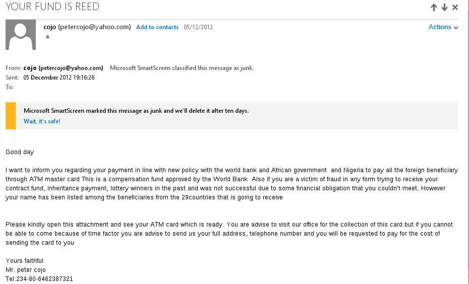

Don't get fooled by the Spammer's
If you have an email account you will get spam at some point. Knowing how to identify spam email will stop you from falling for their tricks
When you get spam email normally it will be placed into your junk folder. However the junk folder should be checked regularly in case real emails got put into it. Most email providers will warn about spam.
Here you can see my mail provider is telling me that they think this message is spam
Example Spam Email

This email shows typical signs of being an junk message. Examples here include:
- Email from someone you have never talked to - Any email from anyone who you have not previously emailed is probably spam and should be treated with suspicion. If it doesn't look right delete it and do not reply. Replying will tell them you read their email and they will send you more spam.
- Asking you to download and run a file - Here they ask you to look at the file and run it. This will most likely be a virus which will attempt to steal your details. You should never download any attachment from anyone without confirming what it is. Especially if you didn't ask for it. Even if it is from a friend you should look at the content of the email to decide if you should open it because their account might have been hacked.
- Asking for personal details - No banking company will email you about your account and ask you to send your details. If any email asks for personal details then it is probably spam and should be deleted
- Asking you to pay a small fee - Many scams operate by trying to extort small amounts of money from people. You should never pay someone money unless you are sure they are an official body who you do need to pay. You should never send money over the internet because an email tells you to.
We suggest you take some time to look into other types of scams that you may get. Knowing what a scam looks like can go a long way in not falling for them
Try reading some of these sites.
{kind=link}